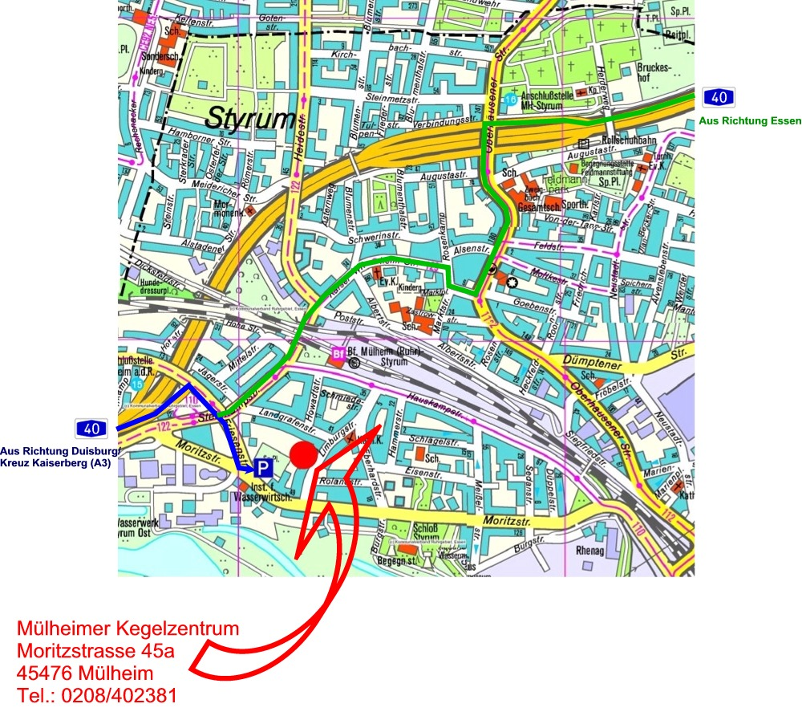

Klicke
auf einen der folgenden: von Web.de
von
reiseplanung.de
f�r Radfahrer u. Fu�g�nger von .radroutenplaner.nrw.de

Sportkegler Gemeinschaft Mülheim a.d. Ruhr e.V.
Rot Weiß 59 Mülheim -
Blau Weiß 61 Mülheim -
KSC 71 Saarn -
SKG Jugend

Du suchst einen Routenplaner ?
Klicke
auf einen der folgenden: von Web.de
von
reiseplanung.de
f�r Radfahrer u. Fu�g�nger von .radroutenplaner.nrw.de

oder
nutze